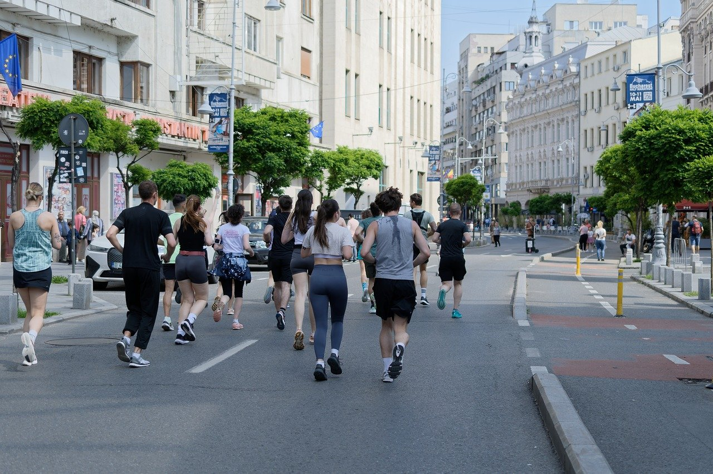

¡Bienvenidos a la cursa KM0, el evento perfecto para corredores de todos los niveles! Disfruta de un recorrido único por las calles de GIRONA, con un ambiente festivo, avituallamientos en el camino y una meta llena de sorpresas.
La Cursa de GIRONA nació hace mas de 30 aós, cuando un pequeño grupo de corredores aficionados decidió organizar un evento que uniera a la comunidad y celebrara el espiritu deportivo de la ciudad. En sus primeras ediciones, la carrera fue modesta con apenas 50 participantes que recorrieron las principales avenidas de la ciudad
En sus primeros años, la Cursa era conocida por ser un desafio unico, ya que la ruta pasaba por las empinadas colinas que rodean el casco histórico, lo que la convertía en un reto tanto fisico como mental.
Introducción
¡Bienvenidos a la cursa KM0, el evento perfecto para corredores de todos los niveles! Disfruta de un recorrido único por las calles de GIRONA.
La Cursa nació hace más de 30 años, uniendo a la comunidad y celebrando el espíritu deportivo.
Datos
- Fecha: 28/02/2025
- Ubicación: Can Tries 4-6
- Distancias: 5Km, 10Km, 21Km
- Modalidades: Individual | Equipos | Infantil
Incluye
- Dorsal y chip de cronometraje
- Camiseta técnica oficial
- Medalla finisher
- Zona de avituallamiento y recuperación
Recorrido y logística
Los circuitos de 5K, 10K y 21K están diseñados para combinar velocidad y disfrute, pasando por los puntos más emblemáticos de la ciudad.
